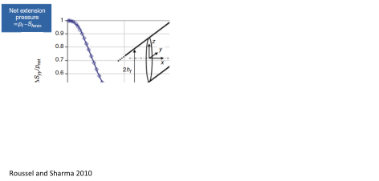

Figure 7.32:
Schematic of field implementation.
 |
Figure 7.33:
Example of pumping and proppant schedule.
|
To keep in mind:
- Fracture should remain open, hence proppant is needed.
- Lower fluid viscosity makes fluids easier to pump.
- Several swimming pools may be pumped in a HF treatment.
- The power of pumps can add up to 100s of muscle cars.
![\includegraphics[scale=0.65]{.././Figures/split/9B-10.pdf}](img1203.svg)